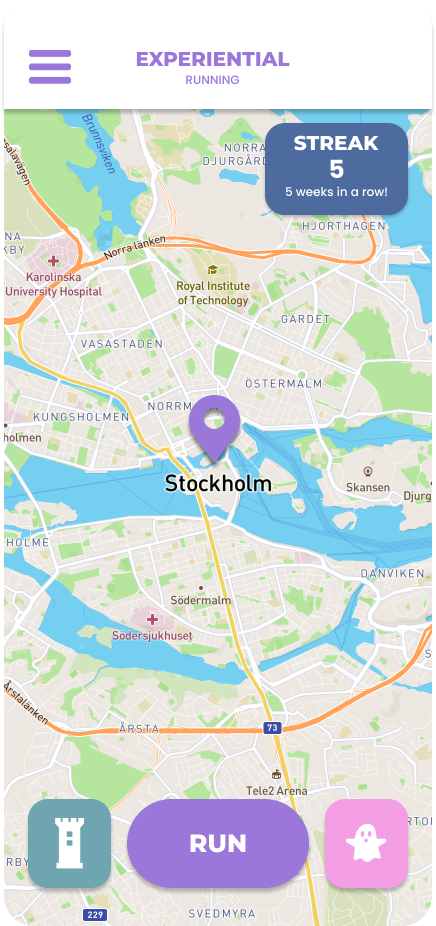
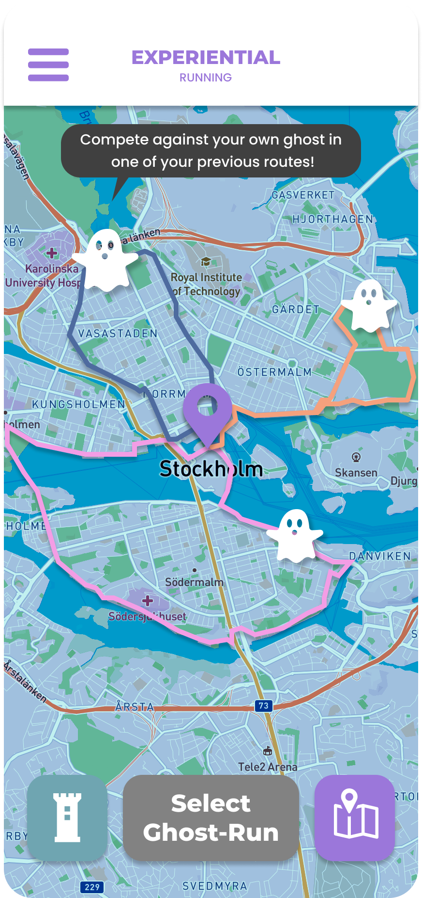

The map view contains the regular running mode, as well as the ghost run mode and sightseeing mode.
If you just want to go on a standard run, use the map view to track your performance and navigate. Use the Play and Pause buttons to take quick breaks.
Use the ghost run to compete against yourself in a previous run. Choose a track, get ready, set and boo! You can also send a request to a friend to compete against their ghost if you have both done the same route, or get matched in a ranked game with a random opponent to see who's faster.
Use the sightseeing mode for a more scenic run. Choose which buildings you want to pass, the length of your run, and start.